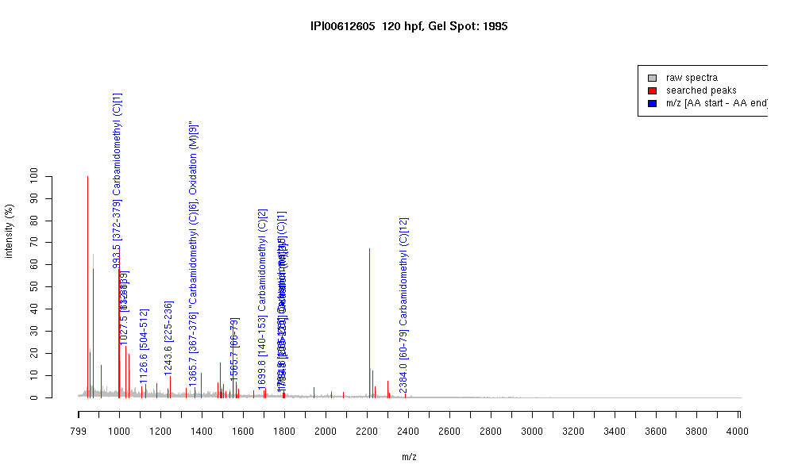

| Name | PREDICTED: similar to insulin receptor tyrosine kinase substrate |
|---|---|
| MW | 70715.5 |
| PI | 6.68 |
| Mascot Protein Score | 67 |
| Masses (matched / unmatched) | 11 / 43 |

| Peptide | MZ (calc) | MZ (observed) | Error (DA) | Error (PPM) | Start | Stop | Modifications |
|---|---|---|---|---|---|---|---|
| CQIMRASK | 993.4968 | 993.4572 | -0.0396 | -40 | 372 | 379 | Carbamidomethyl (C)[1] |
| RFCFLVDK | 1027.5393 | 1027.5243 | -0.015 | -15 | 81 | 88 | |
| RFCFLVDK | 1027.5393 | 1027.5243 | -0.015 | -15 | 132 | 139 | |
| YWCAVTLDR | 1126.535 | 1126.5565 | 0.0215 | 19 | 504 | 512 | |
| HTNSAGESLEAK | 1243.5913 | 1243.6057 | 0.0144 | 12 | 225 | 236 | |
| EDNQRCQIMR | 1365.5997 | 1365.6556 | 0.0559 | 41 | 367 | 376 | "Carbamidomethyl (C)[6], Oxidation (M)[9]" |
| FIADGCQEALLEEK | 1565.7516 | 1565.681 | -0.0706 | -45 | 66 | 79 | |
| HCSFSHQVSAFHQK | 1699.7758 | 1699.8291 | 0.0533 | 31 | 140 | 153 | Carbamidomethyl (C)[2] |
| CLETLTHRQMDMQK | 1790.8347 | 1790.8987 | 0.064 | 36 | 103 | 116 | Carbamidomethyl (C)[1] |
| YICKESSAGCSGEWMK | 1794.7495 | 1794.822 | 0.0725 | 40 | 265 | 280 | Oxidation (M)[15] |
| FMNLKHHADLDLVCK | 1799.8931 | 1799.819 | -0.0741 | -41 | 206 | 220 | Oxidation (M)[2] |
| QMDMQKFIADGCQEALLEEK | 2384.093 | 2384.0002 | -0.0928 | -39 | 60 | 79 | Carbamidomethyl (C)[12] |